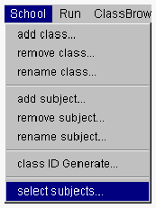

利用サブジェクトを選択する
プロジェクトマネージャでクラスコンパイルを行うときには、プロジェクトファイルが利用するサブジェクトを選択します。利用サブジェクトを選択すると、サブジェクトスクールブラウザにはそのサブジェクトだけが表示されます。プロジェクトを切り替えてコンパイルするときには使用するサブジェクトが異なるので、サブジェクトを選択し直します。

- <サブジェクトの選択>
- １．スクールブラウザのSchoolメニューから select subjects... を選択します。

- ２．コンパイルのために必要なサブジェクトを選択します。

- 複数のサブジェクトを選択することができます。開発クラスが利用しているすべてのサブジェクトを選択してください。
すべてのサブジェクトを選択したら、OKボタンをクリックしてください。（OKボタンクリック後、ダイアログが消去されるまでに時間がかかります。）
(c) 1996-1998 IPA, ETL, AT21, FSIABC, FXIS,
InArc, MRI, NUL, SBC, Sharp, TEC, TIS. All rights reserved.